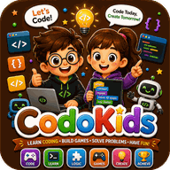

Pip, el robot que olvidó el camino a casa
Un pequeño robot despierta en un mercado ruidoso con la memoria casi vacía. Nour lo ayuda a volver a casa como hacen los programadores: instrucción por instrucción.
Un robot en el mercado de verduras
Nour encontró al robot sentado entre las cajas de tomates, exactamente donde un robot no debería estar.
Era pequeño —del tamaño de una mochila—, con un hombro abollado y un ojo que parpadeaba cuando pensaba demasiado.
—Hola —dijo el robot—. Me llamo Pip. Tengo un problema, y el problema es que no sé cuál es mi problema.
—Esa —dijo Nour, sentándose en una caja del revés— es la frase más interesante que me ha dicho nadie en toda la semana.
Lo que queda en una memoria rota
La memoria de Pip, resultó, estaba casi vacía. Algo había ido mal durante la noche —una caída, una calle mojada, un cable suelto— y casi todo lo que sabía había desaparecido.
—¿Y qué sí recuerdas? —preguntó Nour.
El ojo de Pip parpadeó. —Tres cosas —dijo—. Una puerta roja. Tres escalones para subir a ella. Y un giro a la izquierda: del giro a la izquierda estoy seguro, aunque no sé adónde lleva.
Nour sacó su cuaderno, el de cuadritos, y escribió:
1. Ir hasta la esquina. 2. Girar a la izquierda. 3. Buscar una puerta roja con tres escalones.
—Eso —dijo— es un programa. Vamos a ejecutarlo.
El programa que falló
Fueron hasta la esquina. Giraron a la izquierda. Caminaron y caminaron, y la calle terminaba en un muro, con un cubo de basura y un gato al que no le interesaban en absoluto.
Ninguna puerta roja. Ningún escalón. Nada.
El ojo de Pip parpadeó con tristeza. —Las instrucciones estaban mal —dijo—. Habría que empezar otra vez desde cero.
—No —dijo Nour—. Eso es lo peor que puedes hacer.
Se sentó en el bordillo y abrió el cuaderno. —Las instrucciones no están todas mal. Casi todas seguro que están bien. Solo una está mal. Nuestro trabajo es encontrar cuál.
Encontrar el paso roto
Probaron los pasos uno a uno, como quien revisa una guirnalda de luces para encontrar la bombilla que lo estropeó todo.
Paso 1: ir hasta la esquina. —¿Qué esquina? —preguntó Nour. Pip miró alrededor del mercado y giró despacio sobre sí mismo. Había cuatro esquinas. Simplemente habían usado la más cercana.
Eso era. Ese era el paso roto.
—La instrucción uno no está mal —dijo Nour, tachándola para reescribirla—. Solo no es exacta. Los ordenadores y los robots no necesitan instrucciones casi correctas. Necesitan instrucciones exactamente correctas.
La nueva lista decía: 1. Ir a la esquina del toldo azul. 2. Girar a la izquierda. 3. Buscar una puerta roja con tres escalones.
Probaron la segunda esquina. Nada. La tercera — y Pip se paró tan de golpe que Nour chocó con él.
A media calle había una puerta roja estrecha, con tres escalones de piedra gastados.
El taller de la ventana abierta
La mujer que abrió la puerta tenía el pelo blanco, un destornillador detrás de la oreja y unos ojos que se le llenaron de golpe.
—Pip —dijo—. Ay, Pip. Te caíste por la ventana, ¿verdad? Te dije que esa ventana daba problemas.
Más tarde, mientras ella arreglaba el cable suelto de su hombro, Pip le hizo una pregunta a Nour.
—¿Cómo sabías que no había que empezar de cero?
Nour se encogió de hombros. —Porque empezar de cero tira también todo lo que ya estaba bien. Tenías tres buenos recuerdos. Solo uno necesitaba arreglo.
Pip se quedó callado un momento. Luego le pidió un rotulador a la inventora y, en el metal de su propio antebrazo —con cuidado, en letras pequeñas—, escribió:
Cuando algo falla: no lo borres todo. Busca el paso equivocado.
—Ahora —dijo—, aunque lo olvide, seguiré sabiéndolo.
Y Nour pensó que aquello era, posiblemente, lo más inteligente que había visto hacer a nadie.
🌟 La moraleja: Cuando algo no funciona, no lo tires todo — busca el paso que estaba mal.

Un pequeño robot despierta en un mercado ruidoso con la memoria casi vacía. Nour lo ayuda a volver a casa como hacen los programadores: instrucción por instrucción.
Hablemos del cuento
¿Qué tres cosas recordaba todavía Pip?
Una puerta roja, tres escalones para subir a ella y un giro a la izquierda.
¿Por qué «ir hasta la esquina» era una mala instrucción?
Porque había cuatro esquinas — la instrucción era casi correcta pero no exacta, y los robots necesitan instrucciones exactas.
¿Qué escribió Pip en su brazo y por qué?
«Cuando algo falla, no lo borres todo: busca el paso equivocado», para que aunque lo olvidara, siguiera teniéndolo.